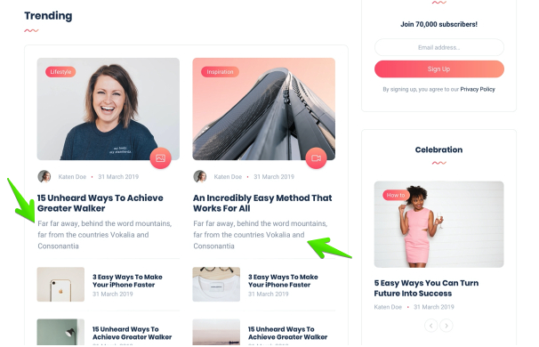

05/11/2020 evondev
05/11/2020 evondev
Nội dung bài viết
Xin chào các bạn đặc biệt là các bạn mới học ngành web này. Đây là một series về kiến thức HTML cơ bản toàn tập dành cho người mới mà mình quyết định viết và chia sẻ cách học, cách sử dụng áp dụng chúng vào thực tế như thế nào, cấu trúc ra sao… thông qua những năm kinh nghiệm mình đi làm và trau dồi. Hi vọng những kiến thức về HTML cơ bản toàn tập mà mình chia sẻ sẽ giúp các bạn hiểu hơn về HTML cơ bản cũng như sử dụng chúng một cách tốt nhất.
Ở trong HTML thì việc tìm hiểu cấu trúc một thẻ có thể là quá dễ tuy nhiên các bạn mới học thì nên biết chúng trông như thế nào, và cách sử dụng ra sao để làm cho chuẩn hơn
Những thẻ có cấu trúc như trên gọi là thẻ tự đóng nghĩa là chúng ta không thể truyền nội dung vào giữa như thẻ đóng mở ở chỗ thẻ p mình nói ở trên, nếu các bạn code như dưới đây là sai nhé, vì thế khi dùng thẻ hãy học cách sử dụng một cách đúng đắn nhất để code chuẩn hơn nhé và tránh gặp lỗi nha.
Những thẻ trong HTML được tạo ra đều có những thuộc tính đi kèm ví dụ như class, id là chung nhất ngoài ra mỗi thẻ sẽ có thêm các thuộc tính riêng ví dụ như thẻ a thì sẽ có href, target, input thì type, require, placeholder… Thì các bạn cần nắm được những cái này để sử dụng một cách đúng đắn nhất để code cho tốt như này
Khi các bạn học tới các thẻ thì hay bị cái là dùng thẻ này thẻ kia mà không biết chúng khác nhau như thế nào từ đó dẫn tới việc code HTML không được tốt hoặc sai mục đích…Thì mình sẽ giải thích cho các bạn biết là thẻ inline và thẻ block khác nhau như thế nào và làm sao để biết thẻ nào là thẻ block và thẻ nào là thẻ inline. Để nhận biết nhanh nhất đó chính là vào trang web htmlreference.io ở trang này nó sẽ tổng hợp toàn bộ các thẻ trong HTML và có mục đánh dấu thẻ nào là inline thẻ nào là block, thẻ nào là thẻ đóng mở, thẻ nào là thẻ tự đóng luôn để các bạn biết cách sử dụng cho tốt nhất luôn nhé. Quay lại vấn đề chính thì thẻ inline và thẻ block có những điểm gì mà các bạn cần lưu ý
Ở những mục trên mình đã nói về cấu trúc cơ bản của một thẻ, các thuộc tính trong HTML, sự khác nhau giữa thẻ inline và thẻ block và cách sử dụng đúng đắn rồi. Ở mục này và các bài tiếp theo của series này mình sẽ tập trung nói về các thẻ, các thuộc tính kèm giải thích chi tiết hơn và cách sử dụng cho các bạn để các bạn thông não hơn về HTML nhé.
## Thẻ p
Thẻ p là thẻ block, thẻ p có các thuộc tính hay dùng là class, id. Thẻ p theo mình nghĩ nó là viết tắt của paragraph là thẻ đại diện cho những đoạn văn bản, ví dụ các bạn đang đọc bài viết của mình các bạn nhấn F12 sẽ thấy các đoạn văn bản đều nằm trong thẻ p, vì thế khi các bạn code các bạn có thể dùng thẻ p để chứa những đoạn văn bản nhé. Tuy nhiên đoạn chữ ngắn vài 3 chữ dùng thẻ p cũng được không sao cả, tuy nhiên chữ ngắn thì mình khuyến khích dùng thẻ inline hoặc các thẻ tiêu đề hơn
## Các thẻ tiêu đề
Các thẻ tiêu đề là những thẻ h1,h2,h3,h4,h5,h6 là thẻ block và thường đại diện cho các tiêu đề từ to cho đến nhỏ và có cách sử dụng khác nhau nhé(h1 là to nhất tới h6 là nhỏ nhất). Thẻ h1 là thẻ thường được sử dụng cho một tiêu đề to nhất của trang web và lưu ý trong một trang web thì chỉ có tối đa một thẻ h1 mà thôi, vì nó ảnh hưởng tới SEO cho nên nếu các bạn sử dụng nhiều hơn một thẻ h1 thì không tốt đâu nhé.